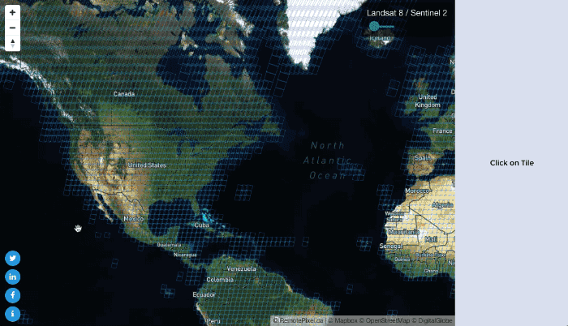

Following a small update of Satellite Search Project early september that increased the speed and lowered the data usage, today I'm happy to add a new feature on RemotePixel's popular project.
With near 200 users per day Satellite Search is by far the most visited project on RemotePixel.ca. This is absolutly crasy (and I'm not talking about the 10's of E-mail I received since july). I'm really glad this project can be useful to people. I also need to mention again that this project won't be possible without Mapbox support.
So having one access point for both Landsat-8 and Sentinel-2 is useful but there is still something that is not user friendly: Creating RGB composite.
On demande Landsat processing
I've being trying to devellop this feature for a while and with some help from awesome GDAL master Even Rouault this is now possible.
In the download modal you can now download the wanted band combination.
- Ouput image is in TOA (top of atmosphere) reflectance (Info)
- Data is x 10000 and converted to interger to limit disk usage
- Image is delivered as 16-bit data
- For display purpose you'll have to scale the values using QGIS for example
- Processing last about 23 seconds
Landsat Only
Sentinel-2 data require more processing time and disk usage ($$$), but I'll try add the same feature later.
New info section
I rewrote the 'info section' to add more content.
- Date: October 2016
- Category: Landsat / Cloud processing